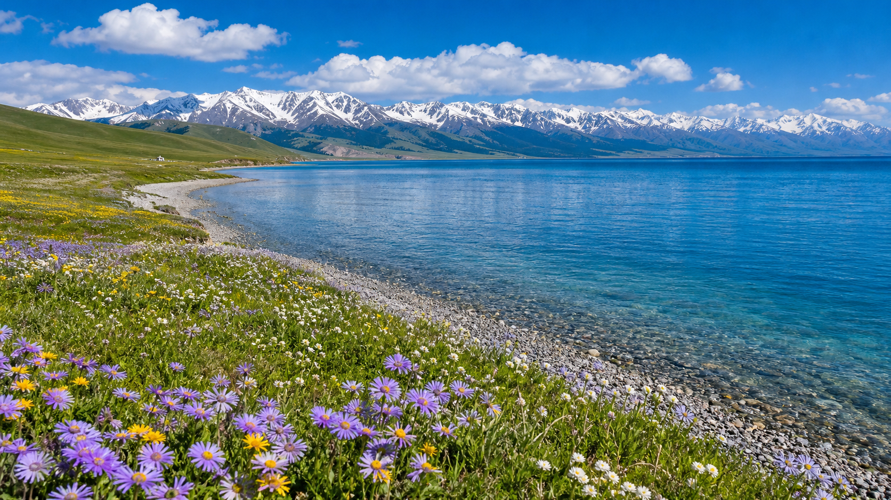

大西洋的最后一滴眼泪，天山脚下的蓝宝石。
赛里木湖位于新疆博尔塔拉蒙古自治州博乐市境内，是新疆海拔最高、面积最大的高山冷水湖。湖面海拔2073米，湖水清澈湛蓝，透明度可达12米。赛里木湖被称为"大西洋的最后一滴眼泪"——大西洋暖湿气流长途跋涉到达此地后，被天山阻挡，化作最后一滴雨雪落入湖中。环湖公路全长约90公里，沿途风景如画，雪山、草原、花海与湛蓝湖水交相辉映。

建议自驾或包车环湖游览（全程约90公里），从东门进入后顺时针环湖。主要停靠点：月亮湾（湖东经典视角）、亲水滩（夏季野花遍地）、点将台（传说成吉思汗点将处）、西海草原（雪山下的牧场）、克勒涌珠（湖畔泉水）、松树头（登高俯瞰全景）。6月中旬至7月上旬湖畔金莲花、野郁金香盛开，是赛里木湖最美的时刻。
1. 环湖公路路况良好，全程柏油路，普通轿车即可通行。
2. 湖水即使在夏天也很冰凉，不建议游泳或涉水。
3. 湖边风大，即使是盛夏也带一件防风外套。
4. 赛里木湖位于连霍高速沿线，是从乌鲁木齐前往伊犁的必经之地，可安排在行程中途经游览。
果子沟大桥（车程约20分钟，震撼的峡谷大桥景观）、霍尔果斯口岸（中国-哈萨克斯坦边境，车程约1.5小时）、伊宁喀赞其民俗区（蓝色老城，车程约2小时）。